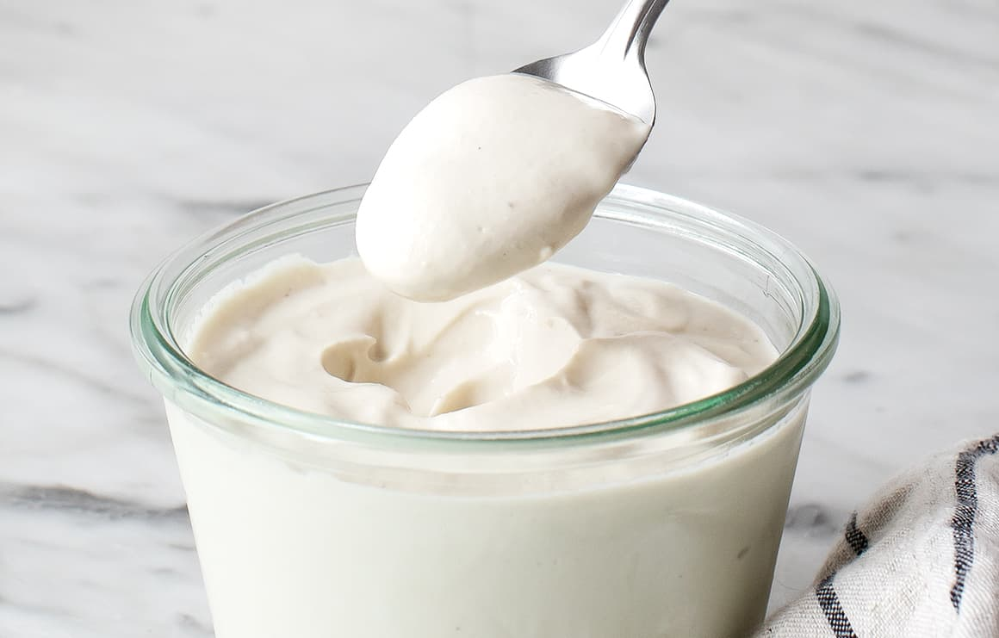

Sour Cream

Thick, White, and Creamy
One day, when I was driving Caitlyanne and Leighan to soccer practice and we were eating our on the go unsalted baked potatoes, I was struck with an ephiphany.
What would go better with our seasonless potatoes than a dollop of equally seasonless sour cream?
So as soon as we got home I sat down and wrote out this recipe. As well as this thrilling acedote.
Ingredients:
- 1 cup cashews, boiled 10+ minutes or left in the fridge for several hours
- 1/2tsp mustard
- 1/2tsp nooch
- 1tsp apple cider vinegar
- 1tbsp lemon juice
- - water
Steps:
- Blend all ingredients
- Pour into a sealed container
- Cool in the fridge or store in the freezer (pull out the night before use and put in the fridge to thaw)